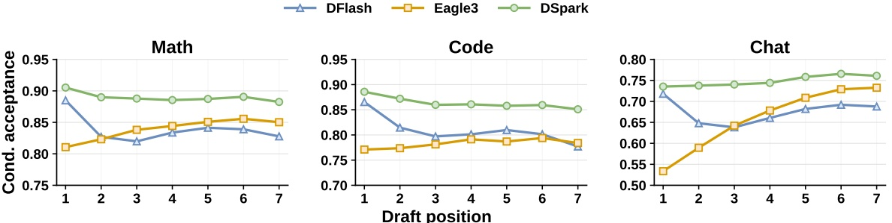
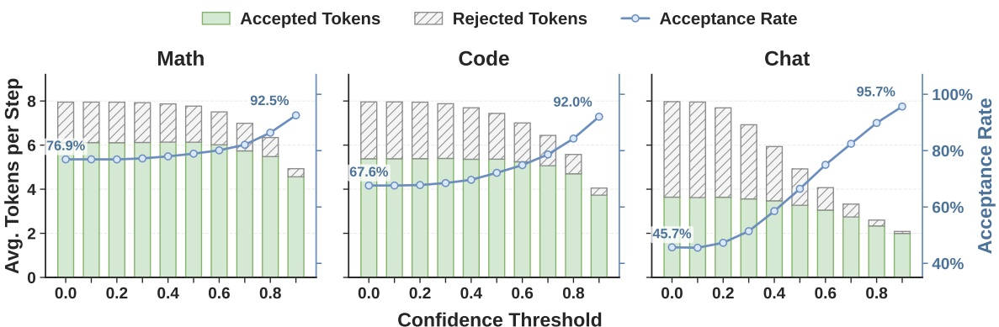
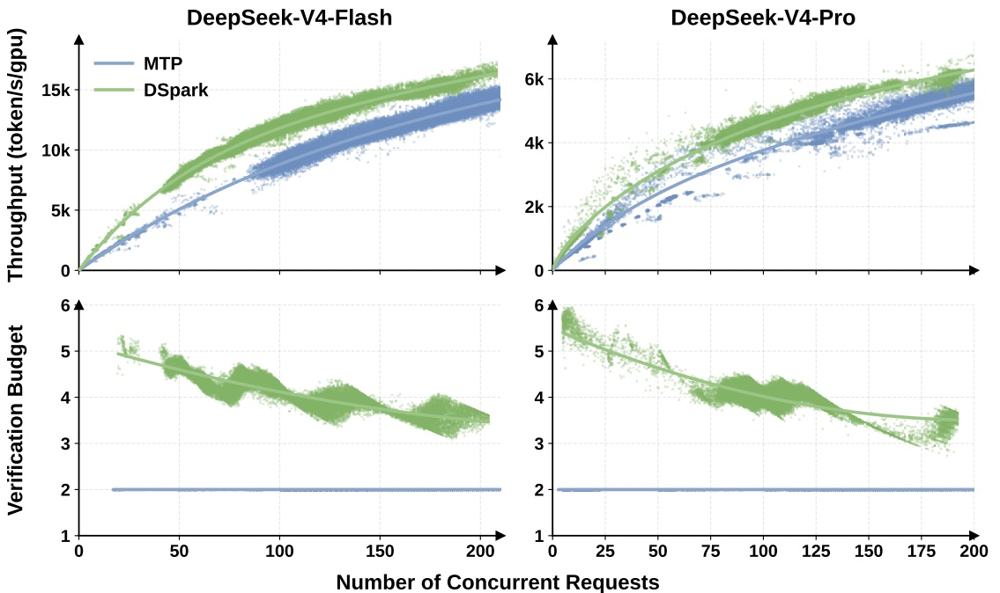

它同时优化“猜什么”和“验多少”
核心答案：DSpark 用“重并行 backbone + 轻顺序 head”保住并行 drafter 的速度，同时缓解后缀接受率衰减；再用置信度 head 预测每个前缀活下来的概率，把这些概率与当前推理引擎的 SPS(B) 容量曲线结合，选择全局吞吐最高的验证长度。
- 离线看 draft 质量，Qwen3-4B/8B/14B 上宏平均接受长度相对 Eagle3 提升 30.9% / 26.7% / 30.0%。
- 线上看系统结果，匹配吞吐时，V4-Flash / V4-Pro 单用户生成速度提升 60%-85% / 57%-78%。
- 边界：低接受率复杂请求仍要支付固定的并行 draft 成本。
投机解码真正要平衡的，是三笔账
一次投机解码先由小 drafter 猜一段 token，再让 target 模型一次并行验证。第一处拒绝会让后面所有草稿作废，因此速度不只由“猜得准不准”决定。
↓ T_draft草稿要快并行 drafter 一次 forward 生成整块，长度增加时 draft 延迟几乎不变。
↑ τ草稿要顺接受长度越长，一次 target forward 摊到的真实 token 越多。
↓ T_verify验证要克制高并发时，每个大概率被拒的后缀 token 都在挤占稀缺 batch 容量。
两类 drafter 各自只做好一半
每一步都条件于前面已采样 token，序列一致性强；但成本随草稿长度 γ 线性增长，只能用浅模型和短块。
一次 forward 生成所有位置，可用更深模型和更长块；但位置彼此独立，后缀容易发生 multi-modal collision。
重计算保持并行，只给输出端加一个很轻的顺序模块；再把验证长度从固定常数改成负载感知决策。
一个很小但关键的失败例子
上下文可能同时允许两条合理续写：“of course” 与 “no problem”。并行预测的两个位置各自对所有可能前缀做边缘化，可能拼出语法上不一致的组合。
并行模型的第一个草稿 token 反而常常强于浅层自回归 drafter，因为它能用更深的网络；问题集中在后续位置。最划算的修复不是放弃并行，而是只补回少量局部序列依赖。
半自回归：重活并行做，顺序只负责“别写歪”
DSpark 的 parallel backbone 一次产生整块隐藏状态与基础 logits，sequential head 再从左到右采样，为每个位置加一个依赖已采样前缀的 transition bias。

DSpark 以 DFlash 为 backbone，并把 anchor 本身作为第一个预测位置，减少一次 mask 位置的计算。
最终分布仍是逐位置 softmax，可直接用于标准 rejection sampling，不需要全局归一化。
完整词表转移矩阵用秩 256 的低秩分解近似，计算与存储成本都较小。
直觉上，parallel backbone 先说“第二个位置可能是 course 或 problem”；当第一个位置真的采样出 of 后，Markov head 提升 course、压低 problem。它不重做语义理解，只解决局部接续。
RNN head 与默认 Markov head 有什么差别
Markov head 只访问前一个 token。RNN head 维护块内 recurrent state，把更长的前缀历史与 backbone hidden 一起送入门控更新。实验显示 RNN 主要在更长 proposal 上带来小幅额外收益，但实现与部署更复杂，所以论文默认使用 Markov head。
训练目标：为什么既有 CE，又有 TV 与 confidence loss
target 模型与共享的 embedding / LM head 冻结，只训练 draft backbone、sequential block 与 confidence head。三个损失都用位置权重 w_k = exp(-(k-1)/γ)，强调更靠前、对前缀生存影响更大的位置。
L_ce：预测真实 next token。L_tv：缩小 draft 与 target 分布的 total variation distance，直接提高理论接受率。L_conf：让 confidence head 预测每一步的软接受标签。
L = 0.1 · L_ce + 0.9 · L_tv + 1.0 · L_conf
不是置信度高就全验，而是算“这一个 token 值不值得占 batch”
confidence head 给出的 c_k 不是“这个 token 看起来像不像”，而是“前面都接受的条件下，第 k 个 token 也能通过 target 验证的概率”。因此一个前缀真正存活到第 j 位的概率是累计乘积。
对 R 个活跃请求，若每个请求选择验证长度 ℓ_r，target 一步真正接收的 token batch 是 B = Σ(1+ℓ_r)，期望产出是 τ = Σ(1+Σa_r,j)。SPS(B) 是引擎初始化时 profile 一次得到的“这个 batch 大小时每秒能跑几步”。目标不是让单个请求最长，而是最大化全系统 token throughput Θ。
全局候选池
解释性示意：所有请求的前缀 extension 按累计生存概率排序。
r2·j10.92r1·j10.88r2·j20.77r3·j10.69r1·j20.55硬件容量决定截断点
每加入一个候选，τ 增加，但 B 也变大，SPS(B) 可能下降。
- 轻负载：额外验证接近免费，可保留更长前缀。
- 重负载：低生存率 token 会挤占关键容量，应更早截断。
- 跨请求分配：预算优先给全局最可能存活的 extension，不要求每个请求等长。
为什么一定要校准
排序只需要“谁更可靠”，而吞吐计算需要概率的绝对数值。原始 confidence 虽有 0.81-0.90 的 ROC-AUC，但整体过度自信，ECE 为 3%-8%。Sequential Temperature Scaling 从左到右校准累计前缀概率，把平均 ECE 降到约 1%，又不改变原来的排序。
early stop 不只是提速技巧，它是无损性的因果边界
是否把第 k 个草稿 token 纳入验证，必须在看到这个 token 的具体实现之前决定。因为 Markov confidence 会用前一个已采样 token，若回头做全局搜索，未来 continuation 的置信度可能反过来影响更早 token 是否入选，造成 selection bias。
Algorithm 1：Hardware-Aware Prefix Scheduler
输入: R 个请求的 confidence 序列；引擎容量表 SPS(B)
1. 对每个请求计算累计生存概率 a[r,j] = ∏ c[r,i]
2. 把全部 (request, position) 按 a[r,j] 从高到低排序
3. 初始每个请求只验证 anchor，B = R，τ = R
4. 沿排序依次加入一个 prefix extension:
B ← B + 1
τ ← τ + a[r,j]
Θ ← τ · SPS(B)
5. 若 Θ 创新高，保存当前每请求长度；否则立即停止
6. 返回吞吐最高且满足因果约束的 prefix lengths
累计概率随位置单调不增，因此全局排序天然遵守每个请求内部的前缀顺序。论文指出，early stop 在吞吐目标单峰时得到全局最大值。
附录反例：去掉 early stop，输出如何从目标分布偏掉
附录构造单请求、最大草稿长度 2 的例子。若第一个草稿 token 为 A，后继 confidence 高，回溯搜索选择长度 2；若为 B，后继 confidence 低，搜索选择长度 0。于是“第一个 token 是否被纳入验证”依赖于它自己的取值。
目标分布是 (A: 0.7, B: 0.3)，draft 分布是 (0.5, 0.5)。这种回溯决策最后产生 (A: 0.85, B: 0.15)，不再等于 target。early stop 在 throughput 第一次下降时就停下，不读取 continuation-dependent 的未来量，从而恢复无损性。
离线实验先隔离“草稿质量”，再解释质量来自哪里
为了不把调度收益混进 drafter 对比，离线主实验关闭 confidence scheduler，所有方法固定提出同样长度的 chain。评测目标是每轮平均接受长度 τ，覆盖数学、代码与日常对话九个 benchmark。
| Target | 相对 Eagle3 宏平均提升 | 相对 DFlash 宏平均提升 | 说明 |
|---|---|---|---|
| Qwen3-4B | +30.9% | +16.3% | 九个 benchmark 全部领先 |
| Qwen3-8B | +26.7% | +18.4% | 跨规模保持增益 |
| Qwen3-14B | +30.0% | +18.3% | 跨规模保持增益 |
| Gemma4-12B | 各 benchmark 一致领先 | 跨模型家族泛化 | |
结构化任务天然更可预测。以 Qwen3-4B 的 DSpark 为例，论文给出的域平均接受长度为数学 5.57、代码 5.12、对话 3.49。这正是固定 verification length 不合理的“数据侧”证据。
实验公平性：Eagle3、DFlash 与 DSpark 如何对齐
论文在同一训练框架、同一数据上重新训练全部 drafter，并使用相同的 target feature layers。Eagle3 的 TTT horizon 与 DFlash / DSpark 的 block size 都设为 7；层数分别为 Eagle3 1 层、DFlash 与 DSpark 5 层。训练数据是 130 万样本的 Open-PerfectBlend，只取 prompt，再由各 target model 用推荐采样参数重新生成 response。评测统一使用 temperature 1.0 与 chain-based drafting。



confidence head 不只会排序，还能被校准到可用于系统计算


线上部署检验的是 Pareto 前沿，不是单一 benchmark 分数
论文把 DSpark-5 部署到 DeepSeek-V4-Flash 与 V4-Pro preview serving engine，对比此前生产使用的 MTP-1。线上散点来自真实用户流量，目标同时包含每用户生成速度和整机聚合吞吐。

这两个高 SLA 点对应 MTP-1 已接近运行边界、只能维持极小并发，分母趋近失效。论文明确把它们解释为“DSpark 打开了 baseline 无法有效支持的交互档位”，而不是常规负载下可复用的倍数。
调度器随负载主动收紧预算

理论算法如何适应真实引擎
ZOS 要求下一步 batch 在当前 step 完成前就已知，因此生产版用两步前的 confidence 估计容量 K，当前候选仍按最新累计置信度排序。
理论算法为保持因果性在 throughput 首次下降时停止；真实 SPS(B) 是锯齿状的。生产版可做不受 early stop 限制的全局搜索，因为长度决策只依赖两步前的历史预测，不会看到当前 token。
不同请求的动态 verification length 会破坏固定 query kernel。系统把 token 展平为独立元素，用 marker tensor 在 sparse attention 中表达序列依赖。
生产训练如何降低目标模型监督成本
DSpark 在 HAI-LLM 中训练。它不跨 worker 传输约 105 词表的完整 logits，而是传 LM head 前的 hidden state，再只在采样位置本地投影，单 token 通信复杂度降为 O(d)。同时用 anchor-bounded sequence packing 把固定数量的 draft block 密集打包，让 drafter 成本与 target 的长上下文长度解耦。
论文同时宣布开放 DeepSeek-V4-Flash / V4-Pro preview 的 DSpark checkpoints，并开放包含 Eagle3、DFlash 与 DSpark 的训练仓库 DeepSpec。本页没有使用这些外部仓库补充论文事实。
这篇论文证明了什么，又没有证明什么
半自回归结构提高固定块 draft 质量；confidence 具备区分能力并可校准；负载感知预算在真实 DeepSeek-V4 流量中把 serving Pareto 前沿向外推。
无论最终保留几位，parallel backbone 先生成完整 γ-token block 的成本已经发生。对天生低接受率的复杂请求，这部分计算无法收回。
离线 Table 1 关闭 scheduler，只比较接受长度；线上 Figure 7/8 才是架构与调度合并后的系统结果。两者不能混成一个“端到端加速倍数”。
661% / 406% 来自 baseline 接近容量崩塌的区域，主要证明可行运行边界被扩展，不代表常规负载普遍有 4-7 倍收益。
一句话带走：DSpark 的价值不是“又一个更准的 drafter”，而是把 token 级置信度真正接到了系统容量曲线上。生成模型决定有哪些候选，调度器决定此刻哪些候选值得占用 target compute。